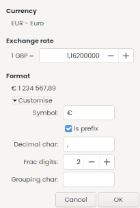

Using currencies dialog
 General
General
| Update on-line | Trigger an update exchanges rate on-line. This is disabled when you only have a single currency. Please see the additional notes below Please see the additional notes below
|
|---|
 Currencies list
Currencies list
display currency ISO code, name, symbol, exchange rate and last modified date
 Buttons
Buttons
| Add | open a dialog to add a new currency + see the notes below. |
|---|---|
| Edit | open a dialog to edit the selected currency |
| Delete | delete the selected currency |
| Set as base | set the selected currency to be the base currency |
Notes: add a currency
- you can pick up new currencies from the official ISO 4217 list
- you can define a custom currency for discontinued or cryptocurrency
When you define a custom currency, please take care of the following:
- the Name must be at least 3 chars long
- the ISO code is optional, but you cannot change it easily later on
- the ISO code must be 3 chars long and cannot be the same an existing ISO 4217 one
Notes: Online Currency Update
This is an extra feature relying on a third party web service.
Your currencies may not be supported:
- as base currency: and nothing will update
- as a target currency: this currency will not be updated
Since 5.7.2: there is a log widget that track call and return of the API for debug purpose.
Default API
- ⧉ frankfurter.app
(no apikey): 30 currencies, Euro limited listed here
example call:https://api.frankfurter.app/latest?base=EUR&symbols=USD,JPY,GBP
Compatible APIs
- ⧉ fixer.io
(apikey): 170 world currencies, including Bitcoin, Gold and Silver rates. listed here
example call:http://data.fixer.io/api/latest?access_key=YOUR_ACCESS_KEY&base=EUR&symbols=USD,JPY,GBP - ⧉ exchangerate.host
(apikey): 170 world currencies, including Bitcoin, Gold and Silver rates. listed here
example call:http://api.exchangerate.host/list?access_key=YOUR_ACCESS_KEY&base=EUR&symbols=USD,JPY,GBP
You can change the URL of the API and add a free a paid key into the preferences
Valid URL are so far:
- https://api.frankfurter.app/latest
- http://data.fixer.io/api/latest
- http://api.exchangerate.host/live
Previous used API
- until 5.7: https://frankfurter.app
- until 5.2: https://api.fixer.io, see ⧉ #1785210
- until 5.1.7: yahoo, see ⧉ #1730527